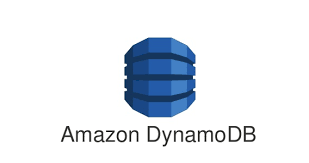
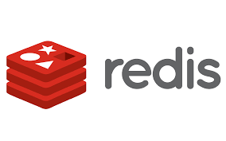
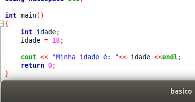
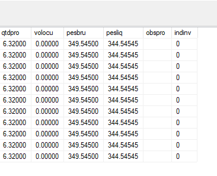
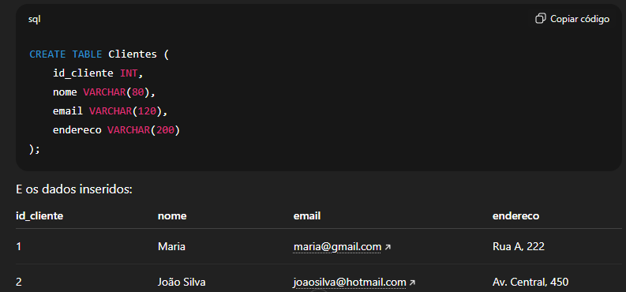

SGBD
O que são SGBD?
Um SGBD (Sistema Gerenciador de Banco de Dados) é um software responsável por criar, organizar e administrar bancos de dados. Ele permite armazenar informações de forma segura, rápida e estruturada, além de facilitar buscas, atualizações e consultas. Com um SGBD, várias pessoas podem acessar os dados ao mesmo tempo sem causar erros ou perda de informações. Esse sistema é muito usado em empresas, sites e aplicativos que precisam lidar com grandes volumes de dados. Entender o SGBD ajuda a compreender como informações são guardadas, protegidas e acessadas no dia a dia digital.
Alguns dos mais conhecidos
Oracle:
A Oracle é uma das empresas mais importantes do mundo na área de tecnologia e banco de dados. Seu principal produto é o Oracle Database, um SGBD poderoso e confiável usado por grandes empresas para armazenar e gerenciar grandes volumes de informações. Ele é conhecido pela alta segurança, desempenho avançado e recursos que permitem trabalhar com dados de forma rápida e eficiente. Além do banco de dados, a Oracle também oferece soluções em nuvem, sistemas corporativos e ferramentas para desenvolvimento, tornando-se uma referência quando o assunto é gestão de dados e tecnologia empresarial.
SapHana:
O SAP HANA é um sistema de gerenciamento de banco de dados moderno e muito poderoso, desenvolvido pela SAP. Sua principal característica é funcionar como um banco de dados in-memory, ou seja, os dados ficam armazenados diretamente na memória RAM, o que torna as consultas e análises extremamente rápidas. Ele é muito usado por grandes empresas que precisam trabalhar com grandes volumes de informação em tempo real. Além do desempenho, o SAP HANA também oferece ferramentas avançadas de segurança, integração e análise, sendo uma das tecnologias mais importantes no mundo corporativo quando o assunto é dados e processamento inteligente.
MongoDB:
O MongoDB é um banco de dados do tipo NoSQL, criado para trabalhar com grandes volumes de informações de forma flexível e rápida. Diferente dos bancos de dados tradicionais, ele não usa tabelas, mas sim documentos em formato semelhante ao JSON, o que facilita o armazenamento de dados variados e sem estrutura fixa. Por ser ágil e escalável, o MongoDB é muito usado em aplicações modernas, como sites, aplicativos e sistemas que precisam lidar com muitos usuários ao mesmo tempo. Ele também permite atualizações rápidas e integrações simples, tornando-se uma escolha popular entre desenvolvedores e empresas que buscam desempenho e flexibilidade.
Tipos de SGBD e Suas Aplicações
Os SGBDs podem ser classificados de diferentes maneiras, de acordo com o formato dos dados e o tipo de uso. Cada tipo atende melhor a determinadas necessidades, desde aplicações simples até sistemas enormes usados por grandes empresas.
SGBD Relacional (SQL)
Os SGBDs relacionais são bancos de dados que organizam as informações de maneira estruturada, usando tabelas com linhas e colunas. Esse formato facilita a leitura, a busca e a relação entre diferentes conjuntos de dados, deixando tudo organizado e fácil de entender. Eles utilizam a linguagem SQL, que permite realizar consultas e manipular informações de forma rápida, precisa e segura.
Por serem muito confiáveis e manterem a integridade dos dados, os bancos relacionais são amplamente usados em sistemas bancários, empresas, sites comerciais e qualquer aplicação que precise de dados bem definidos e consistentes. Sua estabilidade e eficiência fazem deles uma das opções mais populares no mundo da tecnologia.
Exemplos:
SGBD Não Relacional (NoSQL)
Os SGBDs Não Relacionais, conhecidos como NoSQL, foram criados para lidar com grandes volumes de dados de forma mais flexível do que os bancos tradicionais. Diferente do modelo baseado em tabelas, eles utilizam formatos como documentos, chave-valor, grafos ou colunas, permitindo armazenar informações que podem mudar constantemente ou não seguir uma estrutura fixa.
Essa flexibilidade torna os bancos NoSQL ideais para sistemas modernos, como redes sociais, aplicativos, jogos online e plataformas que recebem muitos usuários ao mesmo tempo. Além disso, eles são altamente escaláveis, o que significa que podem crescer facilmente conforme a aplicação aumenta. Por serem rápidos, práticos e adaptáveis, os SGBDs NoSQL se tornaram uma das principais escolhas quando o foco é desempenho e agilidade no tratamento de dados.
Exemplos:

In-Memory
Os bancos de dados em memória, também chamados de In-Memory, são sistemas projetados para armazenar as informações diretamente na memória RAM em vez do disco. Isso faz com que o acesso aos dados seja extremamente rápido, permitindo consultas e análises quase instantâneas.
Essa velocidade torna os bancos In-Memory ideais para aplicações que precisam de respostas imediatas, como sistemas de análise em tempo real, plataformas financeiras, processamento de grandes volumes de dados e soluções corporativas avançadas. Além disso, muitos desses bancos combinam performance com recursos modernos de segurança e otimização. Eles são amplamente usados por empresas que buscam alta eficiência e processamento rápido no dia a dia.
Exemplos:

Dicionário de dados
O que é um dicionário de dados?
O dicionário de dados é um recurso que reúne todas as informações importantes sobre a estrutura de um banco de dados. Ele funciona como um guia organizado, mostrando detalhes sobre cada tabela, coluna e relacionamento existente. Em vez de armazenar apenas os dados, o dicionário explica o que cada campo significa, qual é o seu tipo, se é obrigatório, qual o seu tamanho e como ele se conecta com outras partes do sistema.
Por trazer clareza e padronização, o dicionário de dados é muito usado por equipes de desenvolvimento, análise e banco de dados, garantindo que todos entendam exatamente como as informações estão estruturadas. Ele facilita a manutenção, evita erros e ajuda a manter o sistema bem documentado, tornando-se uma ferramenta essencial em qualquer projeto que trabalha com dados.
| Campo | Tipo | Descrição |
|---|---|---|
|
Id
|
Número | Identificador do cliente |
|
Nome
|
Texto | Nome completo do cliente |
|
E-mail
|
Texto | E-mail do cliente |
Quais os tipos de Bancos de Dados

O tipo INT é usado para armazenar números inteiros, aqueles sem casas decimais. Ele é ideal para valores como IDs, idades, quantidades e qualquer informação que envolva contagem. Por ocupar pouco espaço e ter um grande intervalo de valores, o INT é rápido, eficiente e perfeito para dados numéricos simples e diretos.
O tipo decimal é usado para representar números com casas decimais de forma totalmente precisa, evitando arredondamentos automáticos. Ele é ideal para valores que exigem exatidão, como preços, salários, medições e cálculos financeiros em geral. Nesse formato, o primeiro número indica a quantidade total de dígitos permitidos, enquanto o segundo define quantas casas ficam após a vírgula. Isso significa que um decimal pode armazenar números como 29.90, 1500.00 ou 12.50 com segurança e precisão. Seu limite máximo é 99999999.99, o que permite trabalhar com valores altos sem perda de informação. Por garantir estabilidade e precisão, é um dos tipos mais usados em sistemas que envolvem dinheiro e medidas detalhadas.
O tipo Varchar é usado para armazenar textos de tamanho variável, permitindo que cada valor ocupe apenas o espaço necessário. Ele é ideal para informações como nomes, e-mails, endereços, títulos e outros dados que podem mudar de comprimento. Diferente de tipos fixos, o varchar não desperdiça memória, pois só utiliza o que for realmente escrito. O “n” define o tamanho máximo permitido, que pode variar bastante dependendo do banco de dados em muitos casos chegando a mais de 65 mil caracteres. Esse tipo é amplamente utilizado por sua flexibilidade e eficiência, sendo uma das escolhas mais comuns para campos de texto em sistemas e aplicações.